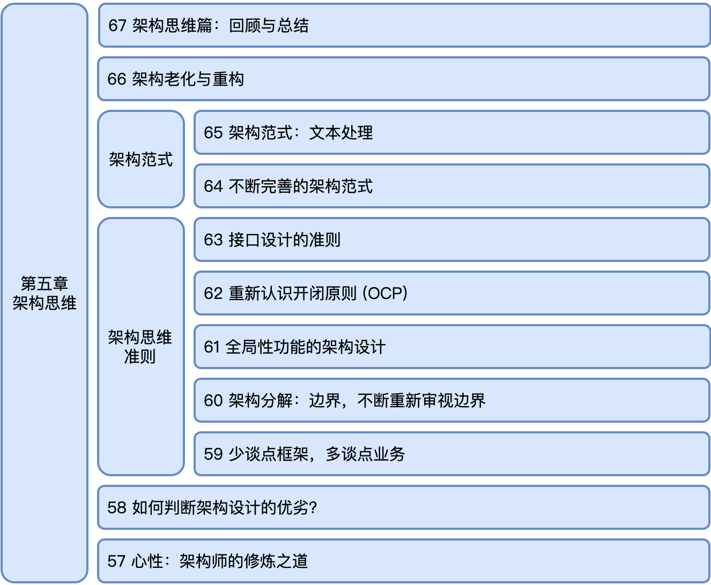

- 00 开篇词 怎样成长为优秀的软件架构师？.md
- 01 架构设计的宏观视角.md
- 02 大厦基石：无生有，有生万物.md
- 03 汇编：编程语言的诞生.md
- 04 编程语言的进化.md
- 05 思考题解读：如何实现可自我迭代的计算机？.md
- 06 操作系统进场.md
- 07 软件运行机制及内存管理.md
- 08 操作系统内核与编程接口.md
- 09 外存管理与文件系统.md
- 10 输入和输出设备：交互的演进.md
- 11 多任务：进程、线程与协程.md
- 12 进程内协同：同步、互斥与通讯.md
- 13 进程间的同步互斥、资源共享与通讯.md
- 14 IP 网络：连接世界的桥梁.md
- 15 可编程的互联网世界.md
- 16 安全管理：数字世界的守护.md
- 17 架构：需求分析 (上).md
- 18 架构：需求分析 (下) · 实战案例.md
- 19 基础平台篇：回顾与总结.md
- 20 桌面开发的宏观视角.md
- 21 图形界面程序的框架.md
- 22 桌面程序的架构建议.md
- 23 Web开发：浏览器、小程序与PWA.md
- 24 跨平台与 Web 开发的建议.md
- 25 桌面开发的未来.md
- 26 实战（一）：怎么设计一个“画图”程序？.md
- 27 实战（二）：怎么设计一个“画图”程序？.md
- 28 实战（三）：怎么设计一个“画图”程序？.md
- 29 实战（四）：怎么设计一个“画图”程序？.md
- 30 实战（五）：怎么设计一个“画图”程序？.md
- 31 辅助界面元素的架构设计.md
- 32 架构：系统的概要设计.md
- 33 桌面开发篇：回顾与总结.md
- 34 服务端开发的宏观视角.md
- 35 流量调度与负载均衡.md
- 36 业务状态与存储中间件.md
- 37 键值存储与数据库.md
- 38 文件系统与对象存储.md
- 39 存储与缓存.md
- 40 服务端的业务架构建议.md
- 41 实战（一）：“画图”程序后端实战.md
- 42 实战（二）：“画图”程序后端实战.md
- 43 实战（三）：“画图”程序后端实战.md
- 44 实战（四）：“画图”程序后端实战.md
- 45 架构：怎么做详细设计？.md
- 46 服务端开发篇：回顾与总结.md
- 47 服务治理的宏观视角.md
- 48 事务与工程：什么是工程师思维？.md
- 49 发布、升级与版本管理.md
- 50 日志、监控与报警.md
- 51 故障域与故障预案.md
- 52 故障排查与根因分析.md
- 53 过载保护与容量规划.md
- 54 业务的可支持性与持续运营.md
- 55 云计算、容器革命与服务端的未来.md
- 56 服务治理篇：回顾与总结.md
- 57 心性：架构师的修炼之道.md
- 58 如何判断架构设计的优劣？.md
- 59 少谈点框架，多谈点业务.md
- 60 架构分解：边界，不断重新审视边界.md
- 61 全局性功能的架构设计.md
- 62 重新认识开闭原则 (OCP).md
- 63 接口设计的准则.md
- 64 不断完善的架构范式.md
- 65 架构范式：文本处理.md
- 66 架构老化与重构.md
- 67 架构思维篇：回顾与总结.md
- 68 软件工程的宏观视角.md
- 69 团队的共识管理.md
- 70 怎么写设计文档？.md
- 71 如何阅读别人的代码？.md
- 72 发布单元与版本管理.md
- 73 软件质量管理：单元测试、持续构建与发布.md
- 74 开源、云服务与外包管理.md
- 75 软件版本迭代的规划.md
- 76 软件工程的未来.md
- 77 软件工程篇：回顾与总结.md
- 加餐 如何做HTTP服务的测试？.md
- 加餐 实战：“画图程序” 的整体架构.md
- 加餐 怎么保障发布的效率与质量？.md
- 热点观察 我看Facebook发币（上）：区块链、比特币与Libra币.md
- 热点观察 我看Facebook发币（下）：深入浅出理解 Libra 币.md
- 用户故事 站在更高的视角看架构.md
- 答疑解惑 想当架构师，我需要成为“全才”吗？.md
- 结束语 放下技术人的身段，用极限思维提升架构能力.md
- 课外阅读 从《孙子兵法》看底层的自然法则.md
67 架构思维篇：回顾与总结
你好，我是七牛云许式伟。
到今天为止，我们第五章 “架构思维篇” 就要结束了。今天这篇文章我们对整章的内容做一个回顾与总结。
架构之道
架构思维篇的内容大体如下图所示。

在前面几个章节，我们已经陆续介绍了架构的全过程：
- [17 | 架构：需求分析 (上)]
- [18 | 架构：需求分析（下）-实战案例]
- [32 | 架构：系统的概要设计]
- [45 | 架构：怎么做详细设计？]
但架构师面临的问题往往是错综复杂的。
给你一个明确的需求说明文档，干干净净地从头开始做 “需求分析”，做 “概要设计”，做模块的 “详细设计”，最后编码实现，这是理想场景。
现实中，大多数情况并不是这样。而是：你拿到了一份长长的源代码，加上少得可怜的几份过时的文档。然后被安排做一个新功能，或者改一个顽固缺陷（Bug）。
我们应该怎么做架构设计？
架构设计架构设计，设计为先，架构为魂。用架构的系统化和全局性思维来做设计。
整体来说，我们这个架构课的知识密度比较高。这在某种程度来说，也是一种必然结果，这是因为架构师需要 “掌控全局” 带来的。
所以这个架构课对大多数人而言，多多少少都会有一些盲点。如果遇到不能理解的地方，从构建完整知识体系的角度，建议通过其他的相关资料补上。当然也欢迎在专栏中提问。
相比一般的架构书籍来说，我们这一章架构思维篇的内容写得并不长。原因是架构思维的本源比架构规则重要。规则可能会因为环境变化而发生变化，会过时。但是架构思维的内核不会过时。
所以我们把关注的焦点放到了不变的思维内核上。
架构之道，是虚实结合之道。
我们要理论与实践相结合。架构设计不可能只需要熟读某些架构思维的理论，否则架构师早就满天飞了。如果两者只能取其一，我选实践。
从实悟虚，从虚就实，运用得当方得升华。这其实是最朴素的虚实结合的道理。对学架构这件事来说尤其如此。架构思维的感悟并不能一步到位，永远有进步的空间，需要我们在不断实践中感悟，升华自己的认知。
这个架构课内容的前四章为 “基础平台”、“桌面开发”、“服务端开发”、“服务治理”。
从内容上来说，由 “基础平台（硬件架构 / 编程语言 / 操作系统）”，到 “业务开发（桌面开发 / 服务端开发）”，再到 “业务治理（服务治理 / 技术支持 / 用户增长）”，基本上覆盖了信息技术主体骨架的各个方面。
有了骨架，就有了全貌，有了全局的视角。
前面四章，我们内容体系的侧重点放在了架构演变的过程。我们研究什么东西在迭代。这样，我们就不是去学习一个 “静态的”、“不变的” 信息技术的骨架，更重要的是我们也在学信息技术的发展历史。
有了基础平台，有了前端与后端，有了过去与未来，我们就有了真真正正的全貌。
我们博览群书，为的就是不拘于一隅，串联我们自身的知识体系，形成我们的认知框架。
信息科技的整体架构，与我们的应用软件架构息息相关。架构分基础架构和应用架构。选择基础架构也是构建业务竞争优势的重要组成部分。
从技能来说，我们可能把架构师能力去归结为：
- 理需求的能力；
- 读代码的能力；
- 抽象系统的能力。
但架构师的成长之旅，首先是心性修炼之旅。这包括：
- 同理心的修炼，认同他人的能力；
- 全局观的修炼，保持好奇心和学习的韧性；
- 迭代能力的修炼，学会反思，学会在自我否定中不断成长。
业务的正交分解
架构就是业务的正交分解。每个模块都有它自己的业务。
这里我们说的模块是一种泛指，它包括：函数、类、接口、包、子系统、网络服务程序、桌面程序等等。
这句话看似很简单，但是它太重要了，它是一切架构动作的基础。
架构行为的三步曲：“需求分析”、“概要设计”、模块的 “详细设计”，背后都直指业务的正交分解，只是逐步递进，一步步从模糊到越来越强的确定性，直至最终形成业务设计的完整的、精确无歧义的解决方案。
对业务进行分解得到的每一个模块来说，最重要的是模块边界，我们通常称之为 “接口”。
接口是业务的抽象，同时也是它与使用方的耦合方式。在业务分解的过程中，我们需要反复地审视模块的接口，发现其中 “过度的（或多余的）” 约束条件，把它提高到足够通用的、普适的场景来看。
在架构分解过程中有两大难题。
其一，需求的交织，不同需求混杂在一起。这是因为存在我们说的全局性功能。其二，需求的易变。不同客户，不同场景下需求看起来很不一样，场景呈发散趋势。
但无论如何，我们需要坚持作为一名架构师的信仰：
任何功能都是可以正交分解的，即使我目前还没有找到方法，那也是因为我还没有透彻理解需求。
怎么做业务分解？
业务分解就是最小化的核心系统，加上多个正交分解的周边系统。核心系统一定要最小化，要稳定。坚持不要往核心系统中增加新功能，这样你的业务架构就不可能有臭味。
所以业务做正交分解的第一件事情，就是要分出哪些是核心系统，哪些是周边子系统。核心系统构成了业务的最小功能集，而后通过不断增加新的周边功能，而演变成功能强大的复杂系统。
这里有一个周边功能对核心系统总伤害的经验公式：
\[ \\sum_ {对每一处修改} log_2(修改行数+1)\]
同一个周边功能相邻的代码行算作一处修改。不同周边功能的修改哪怕相邻也算作多处。
这个公式核心想表达的含义是：修改处数越多，伤害越大。对于每一处修改，鼓励尽可能减少到只修改一行，更多代码放到周边模块自己那里去。
在 “[62 | 重新认识开闭原则 (OCP)]” 这一讲我们介绍了开闭原则。它非常非常重要，可以说是整个架构课的灵魂。总结来说，开闭原则包含以下两层含义：
第一，模块的业务要稳定。模块的业务遵循 “只读” 设计，如果需要变化不如把它归档，放弃掉。这种模块业务只读的思想，是很好的架构治理的基础哲学。
这告诉我们，软件是可以以 “搭积木” 的方式搭出来的。核心的一点是，我们如何形成更多的 “积木”，即一个个业务只读、接口稳定、易于组合的模块。
我平常和小伙伴们探讨架构时，也经常说这样一句话：
每一个模块都应该是可完成的。
这实际上是开闭原则业务范畴 “只读” 的架构治理思想的另一种表述方式。
要坚持不断地探索各类需求的架构分解方法。这样的思考多了，我们就逐步形成了各种各样的架构范式。这些架构范式，并不仅仅是一些架构思维，而是 “一个个业务只读、接口稳定、易于组合的模块 + 组合的方法论”，它们才是架构师真正的武器库。
第二，模块的业务变化点，简单一点的，通过回调函数或者接口开放出去，交给其他的业务模块。复杂一点的，通过引入插件机制把系统分解为 “最小化的核心系统+多个彼此正交的周边系统”。回调函数或者接口本质上就是一种事件监听机制，所以它是插件机制的特例。
领域理解
应对业务需求的变化，最好的结构就是： 最小化的核心系统+多个彼此正交的周边系统。
但是光理解了这一点，并不足以根本性地改变你的架构能力，因为这里面最难的是领域理解。所以需求分析很关键。怎么做需求分析？这一点要讲透真的很难。
我们用的是笨方法。把整个信息科技的演进史讲了一遍。
我们用穷举的方式来讲信息科技的半部演进史。为什么我说是半部？整个信息科技的发展，我们把它分为程序驱动和数据驱动两个阶段。
程序驱动的本质，是自动化的极致。以前，自动化是非常机械的，要完成自动化需要极大的难度。但是，软件的出现让自动化成为一种普惠价值，这是信息科技的上半部演进史带来的核心收益。
但到了数据驱动，事情就变了。我们甚至有了新的专有名词，比如 “智能时代”，或者 “DT 时代”。很多人想到智能，想到的是深度学习，想到的是机器视觉。但其实这非常片面。马云把上半场叫 IT，下半场叫 DT（数据科技），非常形象而且深刻。
我们的架构课，把话题收敛到了 “如何把软件跑起来，并保证它持续健康运行” 这件事情上。
但从企业的业务运营角度来说，这还远不是全部。“[54 | 业务的可支持性与持续运营]” 我们稍稍展开了一下这个话题。但要谈透这个话题，它会是另一本书，内容主题将会是 “数据治理与业务运营体系构建”。
我希望有一天能够完成它，但这可能要很久之后的事情了。
结语
今天我们对本章内容做了概要的回顾，“架构思维篇” 到此就结束了。理解了本章的内容，对于如何构建一个高度可扩展的软件架构你就有了基本的认知。
但不要让自己仅仅停留在认知上，需要多多实践。
架构的功夫全在平常。
无论是在我们架构范式的不断完善上，还是应对架构老化的经验积累上，都是在日常工作过程中见功夫。我们不能指望有一天架构水平会突飞猛进。架构能力提升全靠平常一点一滴地不断反思与打磨得来。
在应对架构老化这件事情上，不要轻率地选择进行全局性的重构。要把功夫花在平常，让重构在润物细无声中发生。
从难度来说，全局性的重构比一个全新业务的架构过程要难得多。重构，不只是一个架构的合理性问题。它包含了架构合理性的考量，因为我们需要知道未来在哪里，我们迭代方向在哪里。
但重构的挑战远不只是这些。这是一个集架构设计（未来架构应该是什么样的）、资源规划与调度（与新功能开发的优先级怎么排）、阶段规划（如何把大任务变小，降低内部的抵触情绪和项目风险）以及持久战所需的韧性与毅力的庞大工程。
如果你对今天的内容有什么思考与解读，欢迎给我留言，我们一起讨论。下一讲我们正式开始进入第六章：软件工程篇。
如果你觉得有所收获，也欢迎把文章分享给你的朋友。感谢你的收听，我们下期再见。
© 2019 - 2023 Liangliang Lee. Powered by gin and hexo-theme-book.